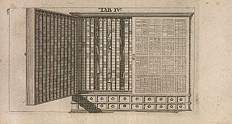
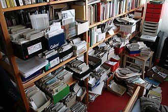
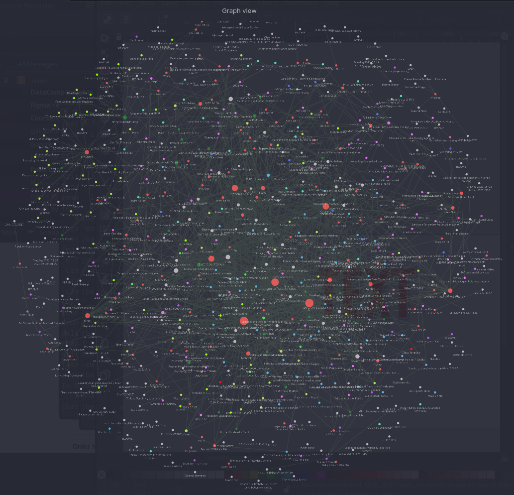

Optimal Notes with Obsidian
…a tale in the spirit of Euripides
Motivation
Learning and creativity involve gathering information through our senses and then discovering relationships, mundane or novel, between all those bits of information. The neural network that is our brain is very powerful at relationships, so-so on information storage, and very poor at information retrieval. Over time our brain becomes filled with more and more information which becomes effectively less and less accessible. A number of great thinkers have said that they never remember something that can easily be looked up.
Obsidian is often referred to as a second brain. This is because it does not work like a database, spreadsheet, or any other typical storage system. It is itself structured more like a neural network. It efficiently and quickly handles information storage and retrieval, and does so in a way that mimics a neural network and facilitates the creative process of identifying relationships between thoughts. A picture is worth a thousand words, so here is an example of a collection of notes (called a vault in Obsidian) with lines which indicate relationships. These linkages develop over time as a vault becomes more mature.
The Tragedy of Notes
I never learned how to take notes. When I was a young student I had a “casual” relationship with note-taking. In high school I organized my notes chronologically, ie. I put them on top of a pile 😉. In college I adopted the innovative approach of seperating my notes by subject matter. I did start taking much more detailed notes in Math and Science classes though, thinking that I would want to refer back to this information in future classes.
When I started my masters program I realized I needed to get serious about my note-taking. Throughout my classes I took meticulous notes on the lectures. I had very experienced doctors and teachers sharing their personal knowledge and clinical experience and I didn’t want to miss a scintilla. By the end of the program I aced my classes and had many binders full of notes. I was ready to move into my profession armed with this awesome resource 😃.
Reality bites. From time to time a client would present with an unusual group of symptoms and I would remember a teacher suggesting a particular herb or formula for this unusual condition. Happily I’m sure I wrote it down and it’s in my notes. So I just need to find it… somewhere… people are waiting…
Where? Which notebook?
Somewhere in all those notes is the one piece of information that I need. Somewhere, in all those beautiful, organized binders full of valuable notes painstakingly gathered over years, now, effectively useless. Sadness and dispair set in 😢.
Deus Ex Machina
When I started studying probability and statistics, data analysis and R programming I realized that I needed a radically different approach to my note-taking. I needed a system where I could quickly retrieve discrete pieces of information which may have been gleaned from a variety of sources. I needed dedicated note-taking software. Lot’s of data science students and professionals were/are moving to Obsidian away from more traditionally structured note-taking applications like Notewise, and of course I checked it out. It turned out it is popular not only among data scientists but by all manner of students, teachers, researchers and writers. In fact, anyone concerned with managing personal information.
And, wow! Obsidian is revolutionary.
Obsidian is free software unlike any other, focused as much on retrieval of information as on storage of information, although it’s pretty slick there too. In addition Obsidian offers many ways to relate notes through links and add metadata to enrich notes. (Did I mention it’s free?)
Obsidian provides:
- A feature-rich editor for text files (in Markdown syntax)
- Powerful indexing: every word in every note can be quickly found
- Flexible structure for your information which need not be predefined but evolves naturally over time
- A variety ways to apply and reference metadata, both standard and custom
- No databases or other backend or proprietary formats, just text files
Let’s look at these points in a bit of detail.
Working in Obsidian
Obsidian provides a disarmingly simple but powerful editing experience. The user interface is of modern design. It uses Markdown, a standardized markup language similar to but much simpler than html. With easily-learned syntax you can create beautiful formatted documents enriched with visual elements such as drawings, charts, images, videos and pdf files. Many different themes are available to fit your taste, and if you know some CSS you can fully customize the appearance of notes. (Programmers can even embed JavaScript.)
Obsidian’s functionality can be extended through the use of the hundreds of community plugins available. For example, I use a program called Todoist for task management. A plugin allows me to create these tasks from within Obsidian and report on them (query them) in my notes. In order to easily consume web content I use a plugin called Surfing, which allows me to open a web page in Obsidian and convert the page to a Markdown text file. I can then easily “clip” parts with a right-click, and these snippets provide the basis and reference for notes I make on the material I’m reading.
Fast, Powerful Search
This is where Obsidian directly addresses the Tragedy of Notes. Literally every word in every note can be immediately retrieved thanks to a blazingly fast indexing system. Start typing a word or phrase and you will see all the notes that contain those words or phrases along with their context. With a little practice you can make sophisticated searches involving multiple conditions. Usually just a few words will find the information you are looking for.
So in the scenario above I could have found the answer to my question in seconds.
Structure Emerges Naturally
When think of keeping notes beyond a bunch of Word documents we naturally think of spreadsheets or databases. The structure of our data can be arbitrary in the case of spreadsheets or must be pre-defined for databases. Changing the structure later involves a lot of effort. But for quick retrieval of information you need a database, right?
Well remember we already dealt with that above. (We don’t need no stinkin’ database.) What we have instead in Obsidian are “backlinks”, which are references from one note to another. This gives us the opportunity for a structure which evolves “organically”. As you make notes and develop them you will begin to connect ideas in one note with another note. A quick search can find all occurences of similar ideas, and relevant notes can be linked to. This cross-linking of information is the neural network, the second brain referred to above.
Information About Information
Metadata has entered the awareness of most people these days through controversies around the Government’s access to phone records. In these cases, the FBI doesn’t (usually) have access to the actual data, the conversations. What they do have is the metadata. This information includes dates, times, who called whom, where the people were, how long the conversation lasted, etc. Investigators say that they can often learn as much from the metadata than from the actual content.
Obsidian allows for the flexible and customizable application of metadata to notes, and this metadata can serve many puposes. For example, if I were writing an article which incorporated a series of observations taken over time (in seperate notes), using metadata I can easily pull the information I need into my article. I could use metadata to easily create a list of references for my article. I could use metadata to track the status of my project (draft, in review, final, published).
Creativity: Beyond Information Retrieval
So far I’ve really focused on information retrieval. And I’ve given a practical example of the usefulness of that quick retrieval. But there is another great value of Obsidian, which is to facilitate the creation of new works.
Obsidian is ideal for a note-taking approach called Zettelkasten, which is German for a box of index cards. In a zettelkasten system notes are “atomic”, meaning they are independent, self-contained pieces of information which are then coded and correlated for easy retrieval. This is how Carl Linnaeus was able to create the biological classification system we still use today. Another oft-cited example is the sociologist Niklas Luhmann who produced around 70 books and 400 academic papers. He apparently had 90,000 notes in his Zettelkasten.
This approach to note-taking is widely practiced in Europe but not so in the USA. Obsidian facilitates all kinds of writing, not just academic writing. The recently deceased Joan Rivers, a comedian, author and talk show host, had 60,000 notes. Other famous comediens like Bob Hope and George Carlin did the same.
Zettelkasten through the centuries
  
Freedom and Privacy
Finally I’ll mention one more aspect of Obsidian. All of your notes are just text files stored on your own computer. They don’t get transmitted or stored anywhere else (unless you want to). Since they are text files they can be opened and read by any editor like Notepad, LibreOffice or Word. You back up your notes in the same way you back up everything else on your system (which you do, right?). Noone is tracking your notes or any other information about you.
Obsidian is about Personal Information. It’s your brain!
Conclusion
I hope that I have convinced you to download Obsidian and explore it’s potential. Personally I can’t imagine taking notes any other way now. Obsidian is easy to use, and there are many on-line resources to help you out including the Guides on this site. I’ve listed a few below. Resources
A shout out to these folks who helped me get started:
- From Sergio
- Linking Your Thinking with Nick Milo
- Zsoldt’s Visual Personal Knowledge Management
- Nicole van der Hoeven